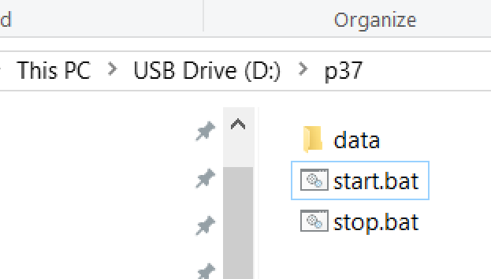
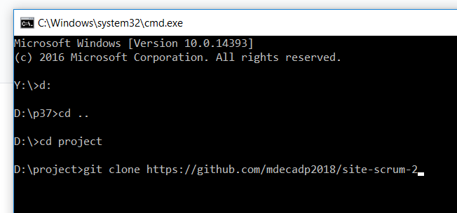

期中作業操作
本課程使用以 Python 3.7.0 為主的可攜程式系統, 在 p37 目錄中有 data 目錄, 以及兩個 batch 批次檔案.
批次檔案是將 Windows 在命令列中可以執行的指令, 寫在副檔名為 bat 的純文字檔案中, 使用者可以直接點擊兩次執行批次檔案中的指令.
start.bat 用於啟動可攜系統, 而 stop.bat 則用於終止可攜系統, 若終止後在操作系統中無 p37 目錄中的任何應用程式開啟, 則使用者可以安全以 eject 退出帶有 p37 目錄的隨身碟.
位於 D: 槽的 USB p37 目錄如下圖:

由於在超文件中所引用的圖片檔案, 在無明顯外框標示界定下, 可能會與頁面說明產生混淆, 因此利用 Leo Editor 開啟 cmsimfly.leo, 直接在 Flask 程式中的 syntaxhighlight 函式加入設定 img border 的 style css 碼, 可以設定動態內容管理系統, 而修改 syntaxhighlight2, 則可修改靜態的頁面 css 設定. 所加入的 css 設定如下:
<style>
img {
border: 3px solid black;
}
</style>
start.bat 批次檔案, 以 SciTE 編輯器開啟.
stop.bat 批次檔案, 以 SciTE 編輯器開啟.

start.bat 批次檔案中的 set 指令區, 主要設定系統的環境變數, Disk 為自訂變數名稱.

登入 github 後畫面, 可以切換到 profile 或 repositories.

登入 github 後, 可以利用 https://github.com 連結到有權限擷取的倉儲列表.
進入先前所認領的期中作業倉儲.
將遠端的作業倉儲內容, git clone 一份到近端, 以便在工作目錄中進行改版.

將遠端的作業倉儲 git clone 到近端後, 進入該倉儲目錄後, 可以利用 python wsgi.py 啟動動態內容管理系統.


pelican 網誌 << Previous Next >> 組員操作影片